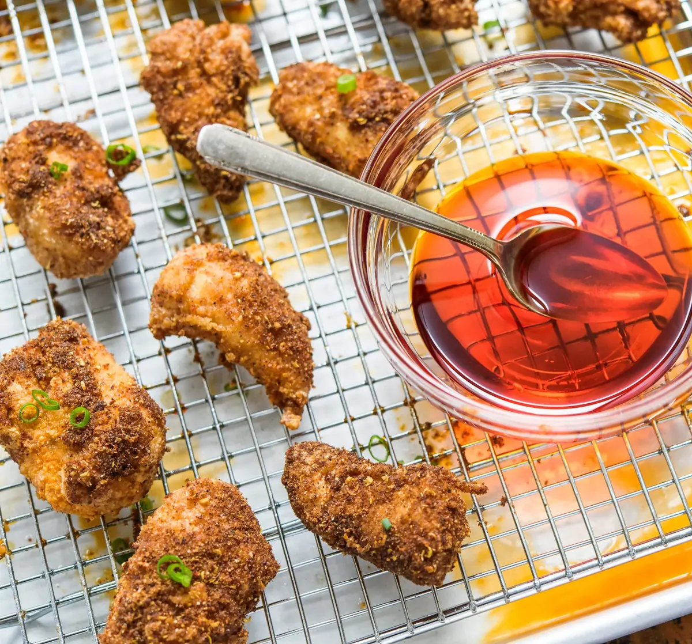

Crispy Sichuan-Chili Chicken
- Total time45 mins
- Serves4
- Ingredients11
- Steps5

Ingredients
- 1/3 cup soy sauce or tamari
- 3 tablespoons unseasoned rice vinegar
- 2 large egg whites, lightly beaten
- 4 tablespoons, plus 2 teaspoons white sugar
- 2 pounds chicken tenders, halved crosswise
- 1 cup cornstarch
- 1/2 cup Sichuan peppercorns, toasted and finely ground, divided
- Kosher salt
- 2 cups peanut oil
- 6 tablespoons Sichuan chili oil, plus more to serve
- 4 scallions, thinly sliced
Directions
- In a large bowl, combine the soy sauce, vinegar, 2 tablespoons of the sugar and the egg whites. Stir until the sugar dissolves. Add the chicken and stir to coat, then cover and let marinate at room temperature for 20 to 30 minutes.
- Meanwhile, set a wire rack in a rimmed baking sheet. In a large shallow bowl, stir together 2 tablespoons of the remainder sugar, the cornstarch, 3 tablespoons of the Sichuan pepper and 2 teaspoons salt; set aside. In a small bowl, stir together the remaining 2 teaspoons sugar, the remaining Sichuan pepper and 1 teaspoon salt; set aside.
- Drain the chicken in a colander. Add half the chicken to the cornstarch mixture and toss to coat, pressing the pieces into the cornstarch so that it adheres. Transfer the chicken to the prepared rack in a single layer, gently shaking off excess cornstarch. Repeat with the remaining chicken.
- Set another wire rack in a rimmed baking sheet. In a large Dutch Oven, heat the peanut oil over medium-high to 375 degrees Farenheight. Add half of the coated chicken and cook until golden brown on the first sides, 2 to 3 minutes. Using tongs, flip the chicken and cook until golden brown on the second sides, another 2 to 3 minutes. Carefully transfer the chicken to the second rack. Allow the oil to return to 375 degrees, then repeat with the remaining chicken.
- In a small microwave-safe bowl or measuring cup, microwave the chili oil on high until just warm, about 30 seconds. In a large, shallow bowl or 13-by-9-inch baking dish, combine the chicken and scallions. Drizzle with chili oil, sprinkle with 2 tablespoons of the seasoning salt and toss. Serve with additional chili oil and the remaining seasoning salt.
Recipe credit: 177milkstreet.com and Milk Street Tuesday Nights by Christppher Kimball